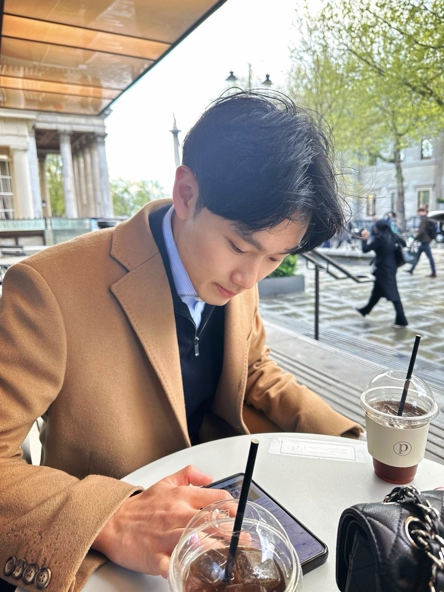

Dr. Justin (Junseok) Ma

Dr. Justin (Junseok) Ma is a Jang Young-Sil Postdoctoral Research Fellow at the Nature Sciences Research Institute and the Soft Material Assembly Group at KAIST. His research centers on liquid-crystal and soft-material systems for adaptive optoelectronic, microwave, and millimeter-wave devices, with an emphasis on scalable material-device integration for next-generation communication, sensing, and photonic platforms.
Dr. Ma received the B.S., M.S., and Ph.D. degrees in Electrical Engineering from POSTECH (Pohang University of Science and Technology), Korea, in 2020, 2022, and 2025, respectively. During his doctoral studies, he developed scalable and reconfigurable liquid-crystal device platforms using advanced fabrication approaches including drop-on-demand printing and laser-based patterning. In recognition of his doctoral work, he received the Best Ph.D. Dissertation Award from POSTECH as the top graduate of the Electrical Engineering program.
In 2024, he was a Recognised Student in the Department of Engineering Science at the University of Oxford (Keble College), where he conducted research with the Soft Matter Photonics Group on printed electrochromic liquid-crystal systems and adaptive photonic devices. During this period, he was selected for the BK21 FOUR Outstanding Graduate Student Award for Overseas Research, a national-level distinction awarded to a limited number of graduate researchers in Korea.
At Korea Advanced Institute of Science & Technology (KAIST), Dr. Ma contributes to multiple national R&D programs, including the 6G Core Technology Development Program funded by IITP, where he investigates fast-switching liquid-crystal reconfigurable intelligent surface antennas for future wireless systems. He is also involved in a major project supported by the Agency for Defense Development on lightweight, beam-steerable millimeter-wave antenna arrays for mobile and airborne platforms.
Previously, at POSTECH, he led the LC Printing for Smart Devices initiative, where he developed high-resolution, full-color smart windows based on printed liquid-crystal droplets and extended printed liquid-crystal platforms to tunable RF and optoelectronic components. He also contributed to the Samsung Science and Technology Foundation CORE: Sub-THz 6G program, with work spanning liquid-crystal materials, reconfigurable millimeter-wave devices, and RIS-related technologies.
Dr. Ma has also worked in collaboration with JNC Corporation, Japan, on liquid-crystal composites for microwave and millimeter-wave applications. This work contributed to the development and commercialization of advanced liquid-crystal mixtures, including ZOC-A019XX, designed for 5G and satellite communication systems.
He has authored more than 20 peer-reviewed publications, including first-author papers in Advanced Materials, Advanced Optical Materials, ACS Applied Materials and Interfaces, Journal of Physics D: Applied Physics, and Dyes and Pigments. His research has addressed key challenges in tunability, scalable fabrication, and device integration across liquid-crystal-based photonic and high-frequency systems. His work was featured on the Frontispiece cover of Advanced Materials.
Dr. Ma’s research has been recognized through several national and institutional honors, including the Jang Young-Sil Postdoctoral Fellowship, the Best Ph.D. Dissertation Award from POSTECH, the BK21 FOUR Outstanding Graduate Student Award for Overseas Research, the POSTECHIAN Fellowship, the Grand Prize at the Electromagnetic Wave Measurement Thesis Contest hosted by KIEES, the Excellent Paper Challenge Prize, the Excellence Award in the POSTECH Best Paper Competition, and the Samsung MX Division Research Sponsorship.
He serves as a reviewer for several international journals, including Journal of Physics D: Applied Physics, Liquid Crystals, Engineering Research Express, Light: Science and Applications, and Dyes and Pigments. His current work aims to advance reconfigurable material-device platforms that bridge soft materials, photonics, and high-frequency electronics.